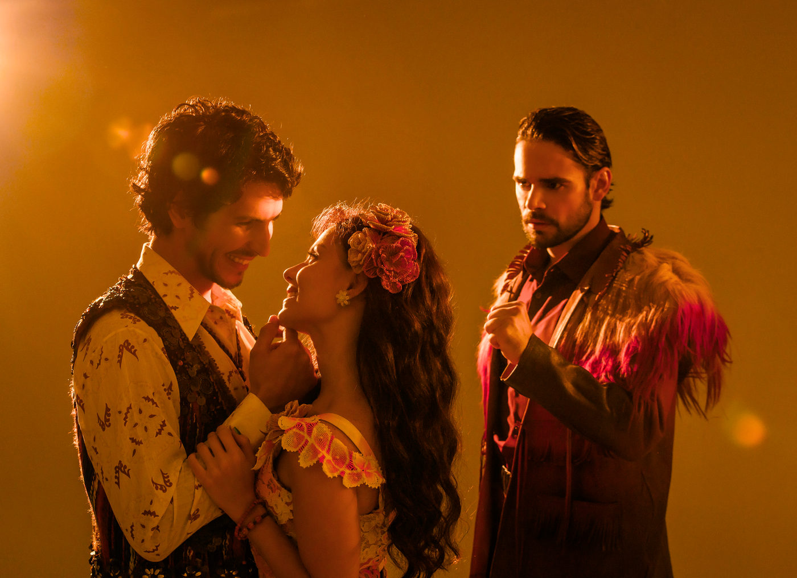

UM ENCONTRO COM A ALMA BRASILEIRA.

Sempre que começo um curso ou uma palestra sobre História e Estética do Teatro Musical no Brasil, uso duas frases que me parecem basilares para quem deseja escrever e produzir conteúdos musicais nacionais.
A primeira diz respeito à encenação: ‘Teatro Musical é, antes de tudo, Teatro.’ A segunda, diz respeito à busca de conteúdos nacionais: ‘já passou da hora de contarmos as histórias dos nossos Pedros-Pedreiros e nossas Marias-Marias’. Após ver teatro por mais de 50 anos, acredito firmemente que alguns projetos possuem tal inteligência cênica e criativa que logram cumprir as duas premissas. Exemplo disso é a atual encenação de Um Grande Encontro.
Jarbas Homem de Mello é um homem de teatro na mais pura acepção do termo: é um grande performer (dos poucos que realmente cantam, dançam e representam com excelência em nosso teatro atualmente), entende de cultura brasileira como poucos e possui profundo respeito pela arte que realiza. Isso se reflete em sua direção – assinada em parceira com o autor do texto, Túlio Rivadávia. Sobre a dramaturgia, é preciso que se ressalte a agilidade de diálogos e a capacidade ao mesmo tempo delicada e bem-humorada de tornar renovadas as canções de um repertório pra lá de conhecido.
A fábula é simples e, até certo ponto, previsível. E nem por isso deixa de ser encantadora. Estão ali todos os elementos de um bom cordel: a mocinha rica, não mais tão ingênua e indefesa, capaz de atrevimentos feministas de bom tom aos nossos dias; o jovem pobre e sonhador que galanteia a mocinha e rouba seu coração; o vilão presunçoso e prepotente que impede que o romance se desenvolva; a melhor amiga e o melhor amigo, de quem só se pode esperar boas risadas e artimanhas; os capangas patetas; a mãe piedosa. Cada peça da engrenagem em seu perfeito funcionamento, embalada por um repertório que faz parte da trilha sonora de todos os brasileiros em todos seus momentos de alegria e emoção – canções que já se tornaram clássicos da nossa música popular (com o perdão do paradoxo) nas vozes de Alceu Valença, Elba Ramalho, Geraldo Azevedo e Zé Ramalho. Sendo assim, cantemos todos juntos o espetáculo inteiro!
Talvez seja nesse ‘cantar junto’ que, em minha opinião resida a maior fragilidade do projeto. Um Grande Encontro tem em cena ótimos cantores, com timbres lindos e que são também instrumentistas e atores. Multiartistas que se deslocam o tempo todo em cena, manipulam a cenografia e adereços, dançam, sobem e descem, trocam de figurino. Com tudo isso, o som que o público recebe fica prejudicado.
Explico melhor. Existe em cena um excelente trio de comediantes que cumprem a função de menestréis dessa fábula, e estão encarregados de apresentar o conflito na abertura e conduzi-lo ao longo da narrativa. Infelizmente, perde-se quase tudo que falam devido à equalização de som entre banda e vozes. O mesmo se dá com muitas canções cujas letras não entendemos por puro desequilíbrio entre a força da música e a delicadeza de algumas interpretações. Tanto quando a música é score como underscore é preciso que as vozes estejam à frente, que as letras sejam absoluta e completamente compreendidas. Você, leitor, pode me dizer: “mas, Gerson, todo mundo conhece essas letras!” E eu sei disso. Mas e quem não conhece, ou quem acha que conhece, ou quem nunca pensou que essas letras poderiam ser narrativas e, portanto, dramáticas? Como fica? Boiando porque não entendeu a história contada e cantada? É uma pena, e é responsabilidade da direção musical e do design de som – indo da qualidade dos microfones até a sonorização do espaço que, eu sei, é muito complicado. Assunto que precisa ser resolvido.
Ainda assim e muito felizmente, a força da performance não se perde. A comunicabilidade se instaura e segue firme e forte oferecendo ao público tudo que se espera desse conto de duas praias – Boa Viagem e Copacabana. O humor não falha nunca, as piadas físicas e verbais são dadas com precisão, os corpos estão vivos o tempo todo. Seria injusto não mencionar cada um dos nomes que, no melhor sentido da palavra ensemble compõe o conjunto responsável pela alegria da plateia. São eles: Márcio Sam e Maria Clara Aquino (Lito e Mara, os amigos), Walerie Gondim, Sémada Rodrigues e Clayson Charles (os menestréis Fofoqueiros), Gabriel Vicente (Apresentador) Nestor Fonseca, Paulinho Ramos e Rodrigo Sestrem (o trio de capangas patetas do vilão). São jogadores atentos, artistas sensíveis, performers precisos e generosos entre si.
O triângulo amoroso entrega exatamente o que precisa e se espera. E isso é muito! Marina Braga e Victor Medeiros conduzem o público com delicadeza pela trajetória da Moça Bonita (que não acredita) de Boa Viagem para os braços do Jovem Sonhador que ouve no velho rádio do pai os programas de auditório; e sempre tem um mas... e esse mas é a vilania do poder oligárquico, machista e latifundiário representado pelo mimado Vilão da história, vivido por Osmar Silveira.
Ainda falando de elenco, preciso mencionar as lágrimas que derramei. Todas elas devo a uma atriz que, mesmo agora, lembrando de sua performance, me enche o coração de doçura. Falo de Larissa Carneiro, que representa a mãe do herói. Ela é um pouco a mãe de todos nós, um pouco a Compadecida de Suassuna, e não à-toa, leva o nome de Anunciação – o momento primeiro da maternidade na tradição cristã. Homem de Mello bem sabe o que é o desterro de sua tradição natal, sabe o que é ir embora rumo ao chamado da arte, conhece essa despedida e a colocou em cena com maestria. A atriz corresponde com graça, leveza e profundidade ao mesmo tempo, realizando um dos momentos mais poéticos e plenos de verdade cênica que talvez eu já tenha visto em teatro musical.
Preciso ainda dizer que não sei quem vem primeiro: se a bela cenografia de Carmen Guerra (com a qual a iluminação de Wagner Freire dialoga em harmonia) ou a concepção cênica/espacial da direção. A impressão que se tem é que tudo foi sendo criado junto e misturado – e assim que é bom! O mesmo se dá com as coreografias de Sabrina Mirabelli (apoiada por Sémada Rodrigues) e a manipulação precisa dos lindos objetos em cena: malas e guarda-sóis são um presente para os olhos. Mas lembra que eu falei do quanto admiro o diretor? Tenho certeza de que ele sabia muito bem o que queria da coreografia e direção de movimentos.
Por fim, o figurino. Regional sem ser folclórico, criativo sem ser excessivo, poético sem ser meloso ou óbvio. É funcional e comunica/expressa para além dos naturalismos banais. Desejaria ter alguns minutos na coxia para pegar em cada peça, verificar os matérias, entender a confecção. Em meio aos excessos de brilhos fúteis que se tem visto nos palcos de São Paulo, o figurino de Bruno Oliveira é um colírio.
Um Grande Encontro é sobre ser brasileiro. O Brasil de Tereza Rachel, Silvio Santos, Jair Rodrigues, biscoito Globo e mala de papelão. É sobre ser humano no Brasil da ditadura, do pós-bolsonarismo, do planeta pedindo socorro. É um encontro com nossa alma. E mais: é a oportunidade de ver performers que são muito mais que os ‘habituais funcionários públicos’ do musical de Broadway! Falei!